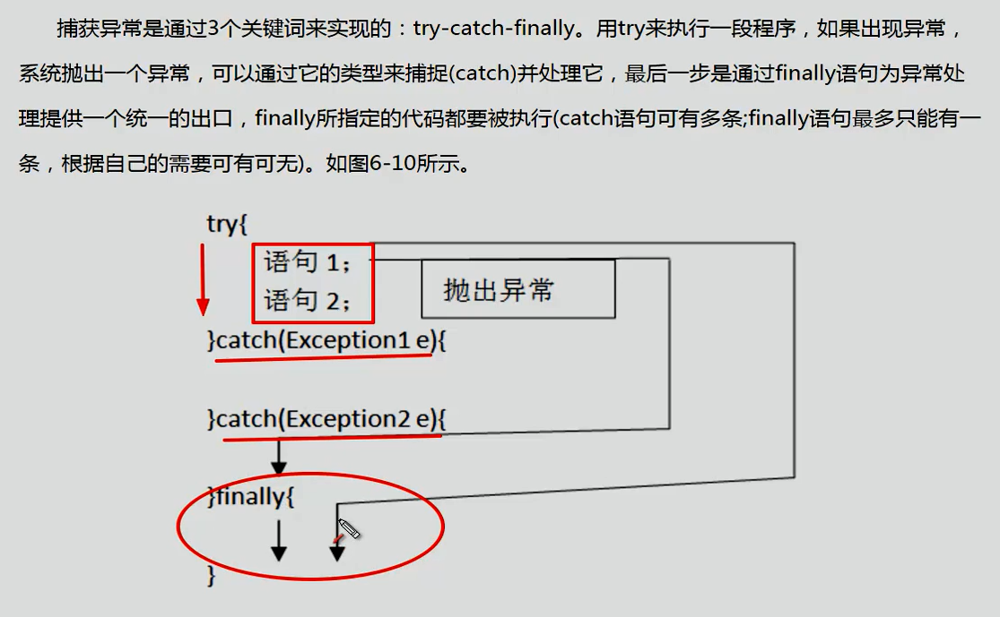

异常
java采用面向对象的方式处理异常：
- 抛出异常：发生异常，将异常封装成对象，停止当前执行，将异常对象交给JRE（java runtime environment）
- 捕获异常：JRE得到一场后，寻找相应代码处理异常。JRE在方法调用栈查找，从生成异常的方法开始回溯。


自定义异常：

容器
泛型
泛型：用于建立类型安全的集合
泛型：数据类型的参数化。可以把泛型理解为数据类型的占位符。
在类的声明处增加泛型列表<T,E,V>
Collection

List

ArrayList底层用数组实现。 查询效率高，增删效率低，线程不安全。一般使用它。
LInkedList增删效率高。 底层使用双向链表存储。
Vector线程安全。 synchronized
Map
Map接口的实现类有：
HashMap：底层是哈希表（数组+链表）（链表长度大于8后，转为红黑树）。线程不安全，效率高，允许key或value为nul

TreeMap：用于排序。效率较低。
HashTable： 线程安全，效率低，不允许key或value为null。

哈希取余：
直接取余 h%length 和 位运算 （h&（length-1））结果是一致的。 但使用位运算时，length必须是2的整数次幂。
TreeMap：
Map中的key value 需要排序时使用TreeMap。
TreeMap使用红黑二叉树为底层。
public emp implements Comparable<emp>
{
//实现Comparable接口，实现自定义类的排序。
public int comparaTl (emp o)
{
if(this.salary > p.salary)
{
return 1;
}
else if (this.salary < o.salary)
{
return -1;
}
else //如果salary相等，则比较id
{
if(this.id > o.id)
return 1;
else if(this.id < o .id)
return -1;
}
}
}
Set
Set就是value固定的Map
HashSet
TreeSet：通过key存储元素。根据key排序（要实现compareTo接口）
容器遍历方法
// 容器遍历方法
【示例9-15】遍历List方法一：普通for循环
for(int i=0;i<list.size();i++){//list为集合的对象名
String temp = (String)list.get(i);
System.out.println(temp);
}
【示例9-16】遍历List方法二：增强for循环(使用泛型!)
for (String temp : list) {
System.out.println(temp);
}
【示例9-17】遍历List方法三：使用Iterator迭代器(1)
for(Iterator iter= list.iterator();iter.hasNext();){
String temp = (String)iter.next();
System.out.println(temp);
}
【示例9-18】遍历List方法四：使用Iterator迭代器(2
Iterator iter =list.iterator();
while(iter.hasNext()){
Object obj = iter.next();
iter.remove();//如果要遍历时，删除集合中的元素，建议使用这种方式！
System.out.println(obj);
}
【示例9-19】遍历Set方法一：增强for循环
for(String temp:set){
System.out.println(temp);
}
【示例9-20】遍历Set方法二：使用Iterator迭代器
for(Iterator iter = set.iterator();iter.hasNext();){
String temp = (String)iter.next();
System.out.println(temp);
}
【示例9-21】遍历Map方法一：根据key获取value
Map<Integer, Man> maps = new HashMap<Integer, Man>();
Set<Integer> keySet = maps.keySet();
for(Integer id : keySet){
System.out.println(maps.get(id).name);
}
【示例9-22】遍历Map方法二：使用entrySet
Set<Entry<Integer, Man>> ss = maps.entrySet();
for (Iterator iterator = ss.iterator(); iterator.hasNext();) {
Entry e = (Entry) iterator.next();
System.out.println(e.getKey()+"--"+e.getValue());
Collections工具类
类 java.util.Collections 提供了对Set、List、Map进行排序、填充、查找元素的辅助方法。
- void sort(List) //对List容器内的元素排序，排序的规则是按照升序进行排序。
- void shuffle(List) //对List容器内的元素进行随机排列。
- void reverse(List) //对List容器内的元素进行逆续排列 。
- void fill(List, Object) //用一个特定的对象重写整个List容器。
- int binarySearch(List, Object)//对于顺序的List容器，采用折半查找的方法查找特定对象。
public class Test {
public static void main(String[] args) {
List<String> aList = new ArrayList<String>();
for (int i = 0; i < 5; i++){
aList.add("a" + i);
}
System.out.println(aList);
Collections.shuffle(aList); // 随机排列
System.out.println(aList);
Collections.reverse(aList); // 逆续
System.out.println(aList);
Collections.sort(aList); // 排序
System.out.println(aList);
System.out.println(Collections.binarySearch(aList, "a2"));
Collections.fill(aList, "hello");
System.out.println(aList);
}
}
使用容器存储表格数据
- 每一行数据使用一个Map（多个键值对，映射表头->内容） ， 整个表格使用一个List （List中放Map）
- 每一行数据使用一个javabean对象，整个表格使用一个Map/List
- 一个完整的javabean，要有set get方法和一个无参构造器